DUO ARTISTS · BRAND COOPERATION REFERENCE
法嘉致富｜星遇企划档案
不要轻视每一次遇见的威力。
——法宣阁
无论你在追逐什么，都请记得停下来抬头看看，“天上有颗最亮的星星”它因为你而存在。
——贺嘉述
ABOUT THE DUO · FAJIA
法嘉致富
法嘉致富，取自法宣阁、贺嘉述名字中的“法”与“嘉”二字，搭配“致富”寓意二人相伴顺遂、前程向好。
两人因共同出演《双程》副 CP 而受到广泛关注，粉丝名为小发夹，取自“法嘉”谐音，应援色为粉金色。
法宣阁的沉稳细腻与贺嘉述的灵动表达，无论在公开活动、双人直播、舞台演出与内容呈现中，形成鲜明互补，展现出自然互动、双向托底和强烈的关系叙事能力。
INDIVIDUAL PROFILES
个人信息
FAXUANGE
法宣阁
- 生日
- 1998.07.23
- 星座
- 狮子座
- MBTI
- ISFJ
- 动物塑
- 大金毛
- 毕业院校
- 上海师范大学表演系
- 影视作品
- 《双程》饰秦朗；《这次换我先回头》饰江一霖
- 音乐作品
- 《小英雄》；《让我带你逃跑》
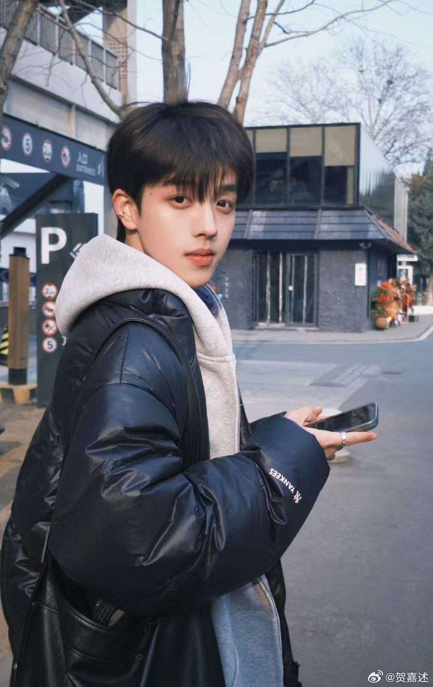
HEJIASHU
贺嘉述
- 生日
- 2004.10.10
- 星座
- 天秤座
- MBTI
- ENFP
- 动物塑
- 小老虎
- 毕业院校
- 浙江工业大学播音与主持艺术专业
- 影视作品
- 《双程》饰程亦晨
- 音乐作品
- 《小英雄》；《暴走大象》
REPRESENTATIVE WORKS
代表作品
PLATFORM CONTENT
平台联动
双人共创内容已成为双方账号的重要高互动内容类型，并在抖音与微博形成跨平台传播。
DOUYIN
抖音爆款共创
视频可在页面内直接播放，也可跳转原平台查看完整互动数据。
WEIBO
微博高赞作品
展示微博端代表性视频共创，并同步呈现公开互动数据。
BUSINESS COOPERATION
商务合作
BEAUTY · SKINCARE
AFU 阿芙
双人品牌面膜大使试探，缠绕，心照不宣的透亮——「宣」示美好，「述」说光采。
有些靠近，不止于距离。
是肌肤在油的沁润下，重拾弹韧；在蜜的包裹中，透出光彩。
是「宣」之于口的亮，遇见「述」之于心的润——
很高兴成为 @AFU阿芙 品牌面膜大使。
爱与光采，皆是双程。
阿芙精油SPA面膜家族，双人成伴，养护成趣，奠定天然出众的年轻底色。
🔗 网页链接
↻ 转发◯ 评论♡ 点赞
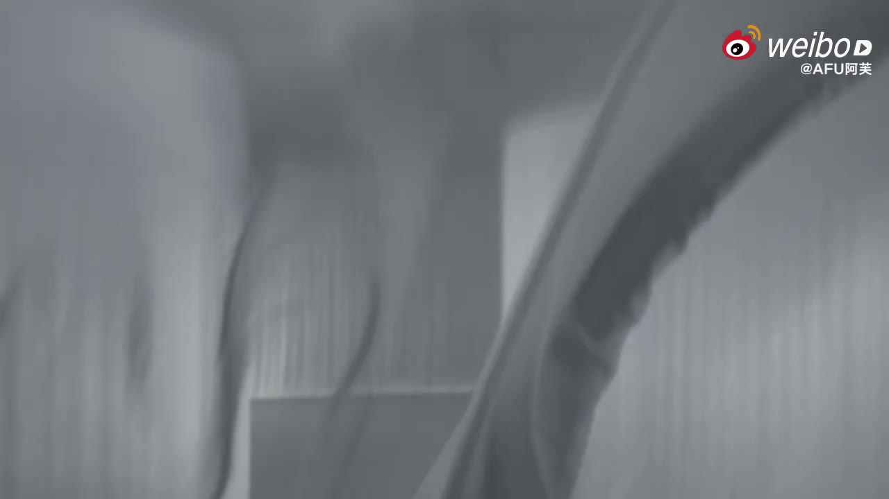
BEAUTY · BASE MAKEUP
FunnyElves 方里
双人品牌挚友贴贴有「法」，心动「嘉」倍，悄然靠近的贴贴，流淌无言的心动。
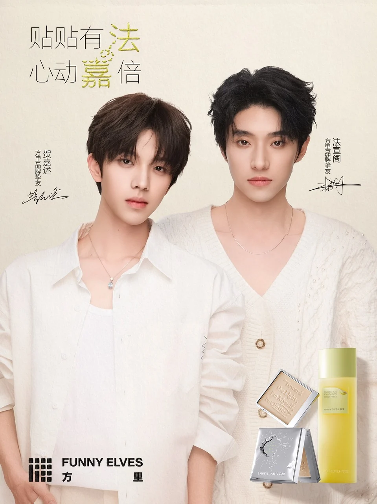
镜头内外，
故事因热爱起笔，因生动持续加更。
很高兴和 @贺嘉述 携手，成为 @FunnyElves方里 品牌挚友，
以奶润透光开启贴贴时刻，
以柔焦清透定格心动妆态。
方里法嘉限定套组限定上线，GET 🔗 网页链接
和我们一起，感受每一次贴贴的心动时刻。
↻ 转发◯ 评论♡ 点赞
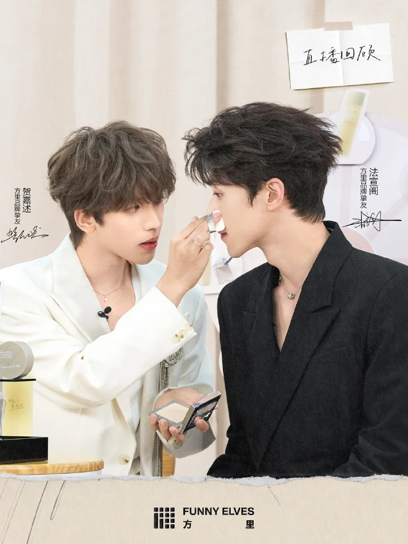
FASHION RESOURCE
时尚资源
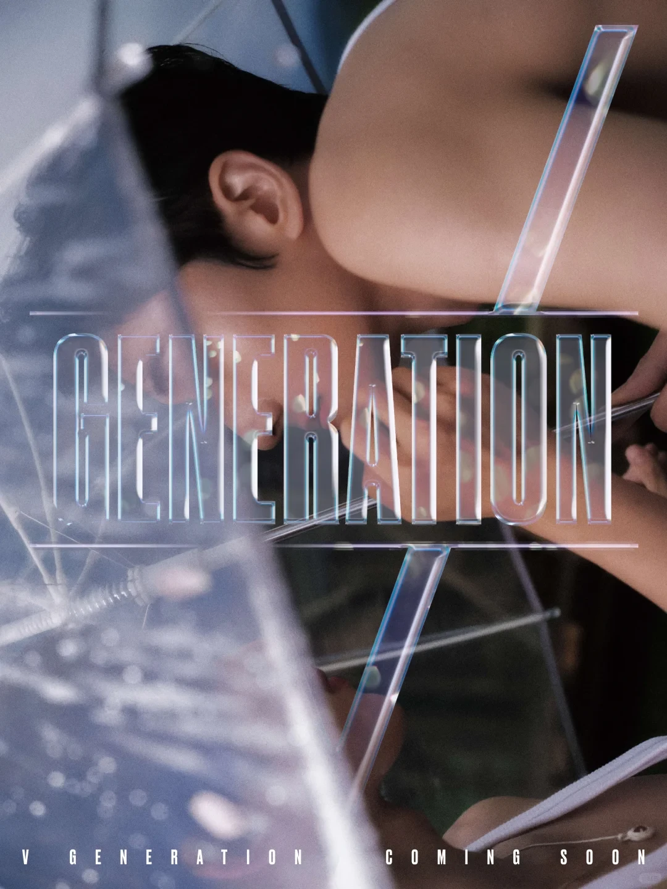
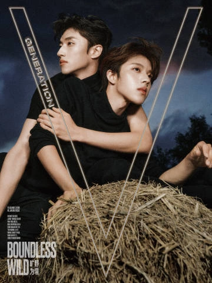
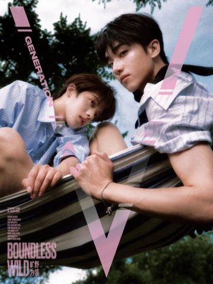
DUO EDITORIAL
V Generation 2026 VOL.3
《情愫四序》｜“旷野为境”双人封面
一段关系，从开始到深处，究竟要走多久？
初识、试探、炽烈、沉淀。
其实世间心意，自有时序生长。
这一次，我们把情愫的四种质地，慢慢说给你听。
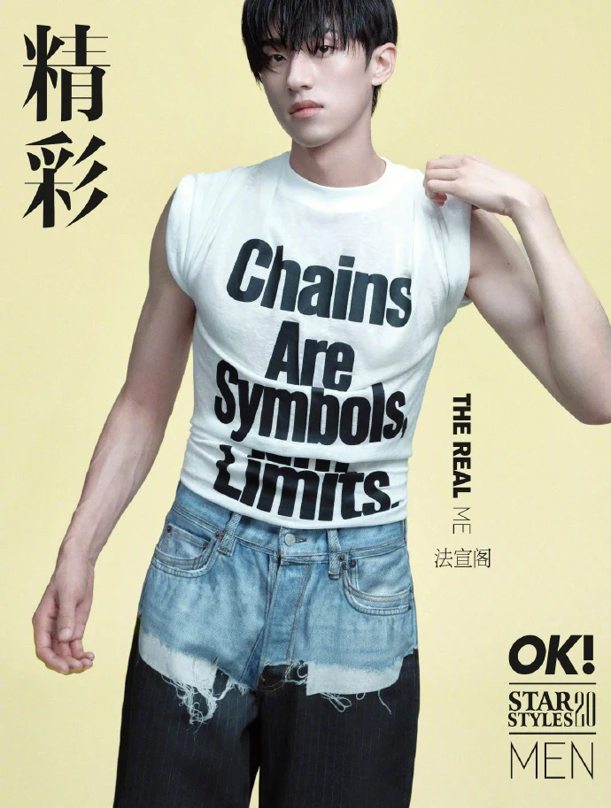
SOLO EDITORIAL · FAXUANGE
精彩 OK!
法宣阁单人封面
每一段新的旅程，总会从一次尝试开始。
带着对世界的好奇，推开那扇通往未知的门，而属于他的故事，也由此翻开新的篇章。
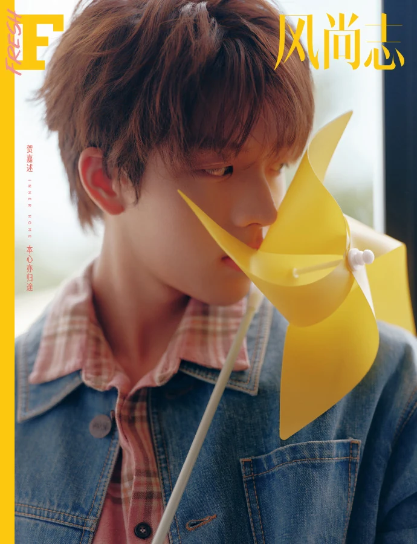
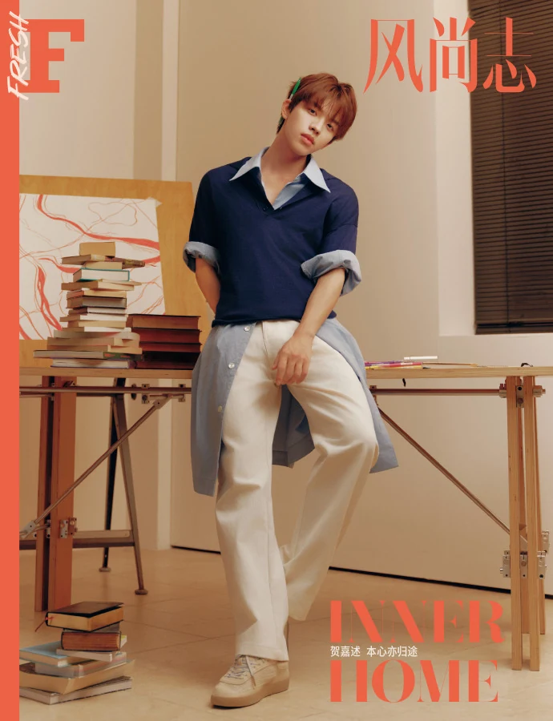
SOLO EDITORIAL · HEJIASHU
风尚志 Fresh
贺嘉述单人封面
旷野为境，日光为裳。
置身自然光影之中，干净灵动间自带少年元气。
喧嚣退去，只剩下蝉鸣声、风声，和镜头里那个自由自在的他。
UPCOMING EDITORIAL
LIVE EVENTS
线下活动
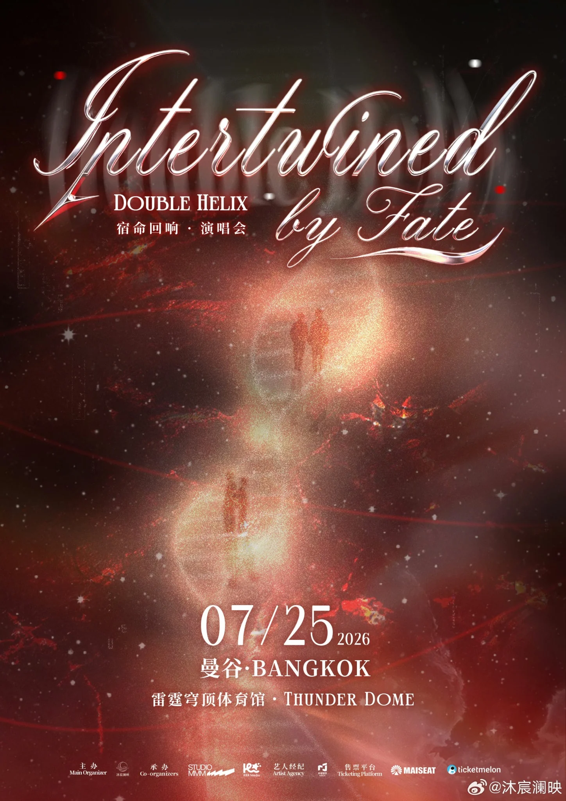
DOUBLE HELIX「宿命回响」演唱会
曼谷 · Thunder Dome
积攒了许久的宿命回响，只为你们轰鸣。
每段旋律，都是双程路上心与心的交织；每次相聚，都藏着未说尽的温柔与执念。
不必开口，曲调自有归处。
「宣你述说」双人见面会
曼谷 · LIDO CONNECT HALL 3（2F）
「宣你述说」—以“宣”为名，以“述”为约。
这既是两人名字的巧妙交织，也代表一份面向所有陪伴者的诚挚邀请，
来听他们说，也来对他们说。
RESOURCE DOWNLOADS
资料下载
本网站内容用于持续更新与信息发布，PDF 文件仅供合作交流与非商业用途使用。
所有资料严禁用于商业销售、有偿传播或任何营利性活动，未经书面授权不得转售或二次分发。
本方保留对违规使用行为追究法律责任的权利。
CONTACT
合作建联
本文所涉及的具体合作身份、交付形式及执行方案等相关事宜，仅供初步沟通与参考之用，最终内容均以米椒娱乐官方正式沟通及书面确认为准。
工作联系：mejoymedia@foxmail.com
OFFICIAL SOCIAL ACCOUNTS
官方账号
抖音
法宣阁
贺嘉述
微博
法宣阁阿
贺嘉述
小发夹的首饰盒
小红书
法宣阁
贺嘉述
小发夹的首饰盒
Instagram
@faxuange
@hejiashu1010
@jewelrybox7231010
数据截至 ；粉丝数为平台公开数据，跨平台未去重。